Athens is one of Europe's most underrated food cities — a sprawling maze of neighborhood tavernas serving recipes that haven't changed in generations. But the tourist-facing restaurants lining Plaka and Monastiraki Square? Reddit's Greece community will tell you to run the other way.
We analyzed hundreds of Reddit posts from r/GreeceTravel, r/greece, r/Athens_Greece, and r/athina to find the tavernas that actual Athenians and repeat visitors recommend over and over. Skip the picture-menu traps — these are the tables worth reserving.
📊 How we built this list
We analyzed 200+ Reddit posts and 1,500+ comments across r/GreeceTravel, r/greece, r/Athens_Greece, and r/athina — spanning 2021 to 2025. Tavernas were ranked by how frequently they were recommended by independent users. Every spot on this list was mentioned in at least 3 separate threads by different people. We weighted Athenian locals' picks more heavily than first-time visitor posts.
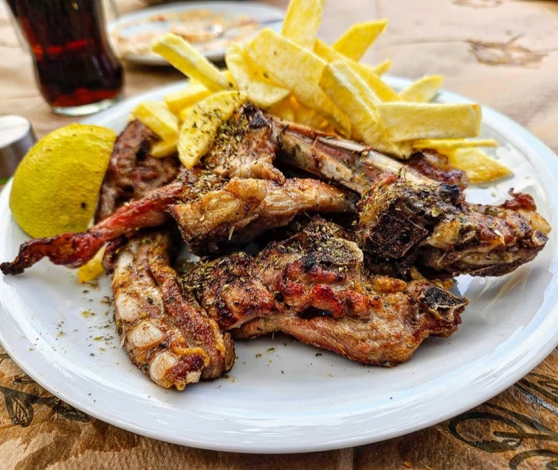
What to order: Lamb chops (paidakia) — sold by the kilo and grilled to perfection over charcoal. Add a Greek salad, tzatziki, and house wine by the carafe. That's the whole menu, and it's all you need.
"Been here twice. Can confirm it's a great option near the Acropolis that isn't a tourist trap."
— r/GreeceTravel · reply
tabiji verdict: The single most recommended taverna on Reddit for Athens. Two locations on the same street in Thissio — both packed with locals. The lamb chops are legendary, the setting under the trees is magical, and the bill is shockingly cheap. Go early or wait.
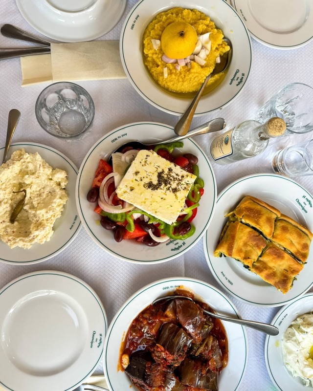
What to order: Whatever's on the daily menu — it changes based on what's fresh. Think moussaka, gemista (stuffed tomatoes), stewed lamb, and seasonal greens. This is grandma-style home cooking at its finest.
"Taverna Oikonomou and Ama Lachei are my favorites. Ordinarily spend 25-30 EUR per person (without wine / alcohol)."
— r/GreeceTravel · Good restaurants in Athens thread
"Taverna tou Oikonomou (Ano Petralona). I mostly suggest it due to the location and the atmosphere. The food is good — it's traditional, authentic, and 'honest' — it's like the food most Greeks eat at home."
— r/greece · Favorite Restaurants in Athens
tabiji verdict: The quintessential "yiayia's kitchen" experience. No menu gimmicks — just whatever they cooked today, served in a courtyard under a vine-covered pergola. The kind of place where you point at the pot and trust the process. Peak Athens.
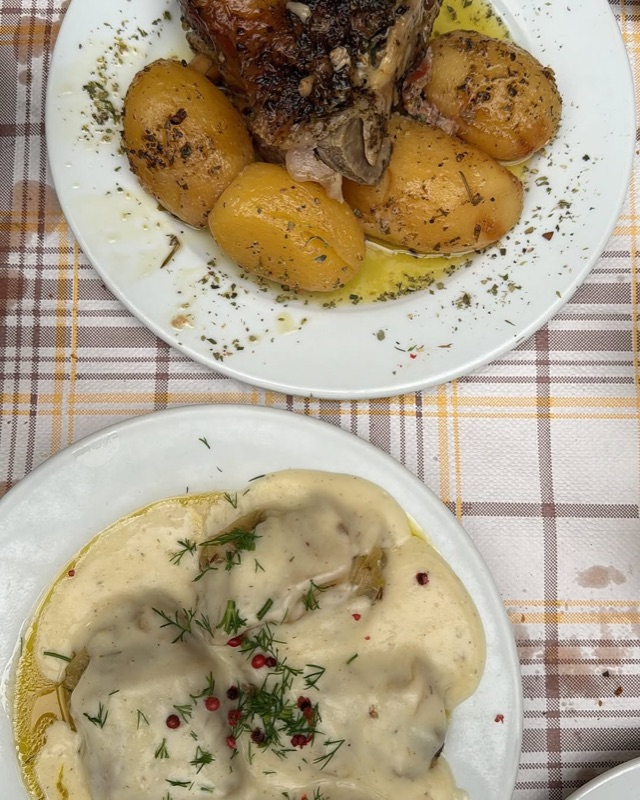
What to order: Start with saganaki and dolmadakia, then go for the slow-cooked lamb kleftiko or the pastitsio. House retsina wine is the authentic choice. Live rebetiko music some evenings.
tabiji verdict: Open since 1927 and still drawing locals — that tells you everything. In the heart of Psyrri but somehow untouched by the tourist tide. The live rebetiko music on weekends makes this feel like stepping into old Athens. A rare find.
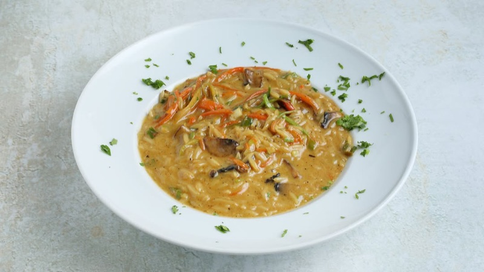
What to order: Grilled meats, slow-cooked dishes of the day, and generous mezedes. Their wine list focuses on small Greek producers. Share a few plates family-style.
"My two go to Athens restaurants for great traditional food are Mavro Provato (Black Sheep) in Pagrati. The food is always delicious and affordable — dinner for 2 with a bottle of wine for around 40 euro."
— r/GreeceTravel · Good restaurants in Athens thread
tabiji verdict: "Black Sheep" in the residential Pangrati neighborhood — far from any tourist trail. Dinner for two with wine for €40 is remarkable value. The kind of spot where the waiter knows every regular by name. Worth the walk from the center.
What to order: Gemista (stuffed peppers and tomatoes), grilled octopus, fava bean puree, and whatever daily special they're running. Wash it down with a carafe of house wine.
tabiji verdict: A beautiful vine-covered courtyard in the heart of bohemian Exarchia. Lunch for two under €25 is almost unheard of in a European capital. Some call it "touristy for Exarchia" — but when locals are still eating there daily, that label doesn't stick.
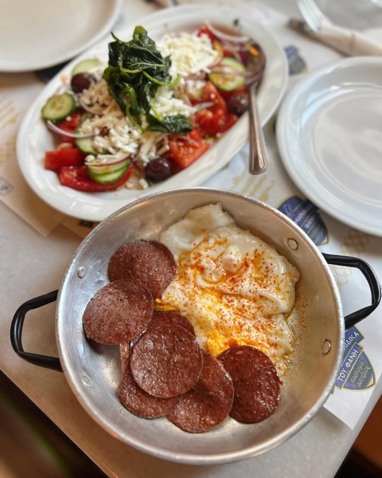
What to order: Pastourma (cured beef), soutzouki, loukaniko sausages, and their selection of cured meats with warm bread. The meze platters are perfect for sharing. Try the pastourma omelette.
"It's called Fanis' Karamanlidika. It's not the typical touristy place as you would call it, but the food and the atmosphere are really good."
— r/athina · Restaurant/taverna recommendations
tabiji verdict: Part deli, part taverna — a concept unique to Athens. The cured meats and pastourma trace back to Constantinople-era Greek traditions. Two locations: the original near the Central Market is the one to visit. A delicious history lesson.
💶 €8–€15/person
📍 Central Market (Varvakeios), basement level
📌 Google Maps →
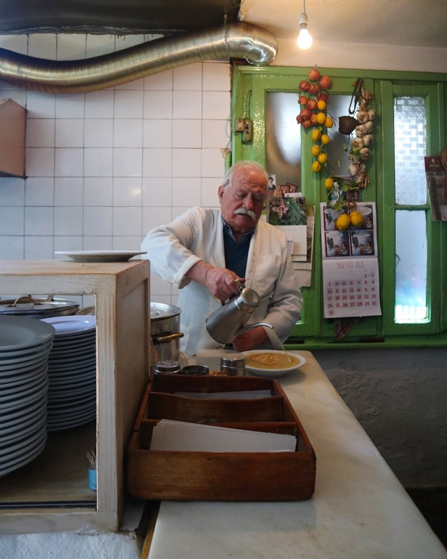
What to order: You don't order — you eat what they cooked. Usually chickpeas, grilled fish, or bean stew. Wine comes from the barrel. No menu, no sign, no fuss. Cash only.
"Traditional taverna: Diporto — a hidden gem, might be hard to get a table but if you want a taverna it deserves a try."
— r/Athens_Greece · Can't-miss Athens restaurant
tabiji verdict: The most legendary hidden taverna in Athens. No sign outside — just descend the stairs into a basement below the Central Market. Barrel wine, communal seating, and food that hasn't changed in decades. Not for everyone, but if you want raw authenticity, nothing beats this.
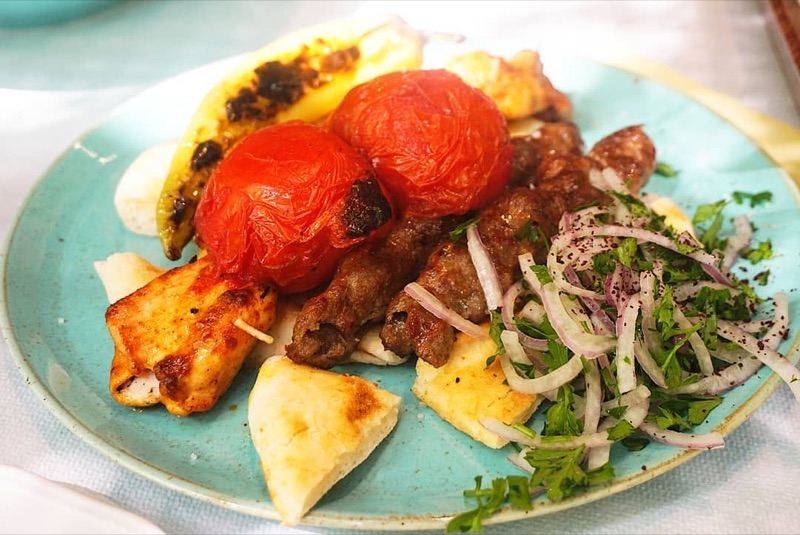
What to order: The meze sampler plate to start, then saganaki, grilled halloumi, and any of the regional Greek dishes on the daily board. Great selection of Greek wines by the glass.
"Tzitzikas & Mermigas in Syntagma is fabulous and great value for money."
— r/GreeceTravel · Best Food in Athens
tabiji verdict: "The Cicada and the Ant" — named after the Aesop fable. Yes, it's right on Syntagma and popular with tourists, but locals eat here too. The modern take on traditional mezedes is consistently excellent. A rare quality-in-the-center exception.
What to order: The daily specials — home-cooked casseroles, moussaka, pastitsio, or whatever seasonal dish they're running. Portions are massive and the price is absurdly low.
"Olympion Tavern. Wouldn't call it a hidden gem, we also weren't the only tourists there but it's tasty, cheap classic homecooked style food near Pangrati area. Went twice and both were the best meals we had in Athens."
— r/GreeceTravel · Looking for authentic tavernas
tabiji verdict: Walking distance from the Panathenaic Stadium but worlds away from the tourist strip. Cheap, honest, home-cooked food — the kind of place where you go back the next night. The Pangrati neighborhood itself is a delight to explore.
What to order: Cretan specialties — dakos salad, kaltsounia (cheese pies), apaki (smoked pork), and lamb with stamnagathi (wild greens). The Cretan raki flows freely.
tabiji verdict: A Cretan taverna in bohemian Exarchia — bringing the flavors of Greece's largest island to the capital. The name means "if we're lucky" and you will be if you score a courtyard table. Cretan cuisine is arguably Greece's best regional food.

What to order: Updated Greek classics — their moussaka deconstruction, slow-cooked pork belly, and seasonal vegetable dishes. Good Greek wine list with lesser-known labels.
"Check out Taverna Klimataria in Psyrri or Oineas in Kerameikos — they are beloved by locals, serve hearty traditional dishes, and have that cozy, authentic vibe."
— r/GreeceTravel · Looking for authentic tavernas
tabiji verdict: The bridge between traditional taverna and modern Greek restaurant. Elevated takes on classic dishes without the pretension or the price tag of fine dining. Beautiful courtyard seating in a quiet Psyrri side street.
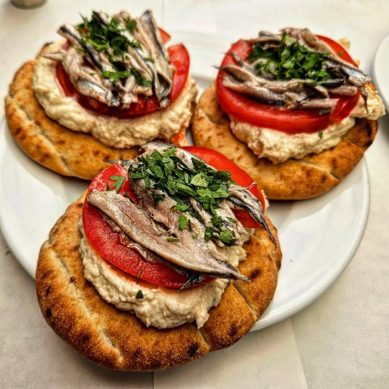
What to order: Fresh grilled fish of the day (priced by the kilo), grilled octopus, shrimp saganaki, and fried calamari. Ask the waiter what came in fresh — they'll steer you right.
"Atlantikos at Psirri / Gazi (I recommend their annex site) or one of the seafood tavernas in the Varvakios Central Municipal Market."
— r/GreeceTravel · Looking for a good tavern
tabiji verdict: Athens isn't famous for seafood like the islands, but Atlantikos proves you don't need a ferry to eat excellent fish. The annex location is the local favorite — more relaxed, same quality. Fair prices for genuinely fresh catch.
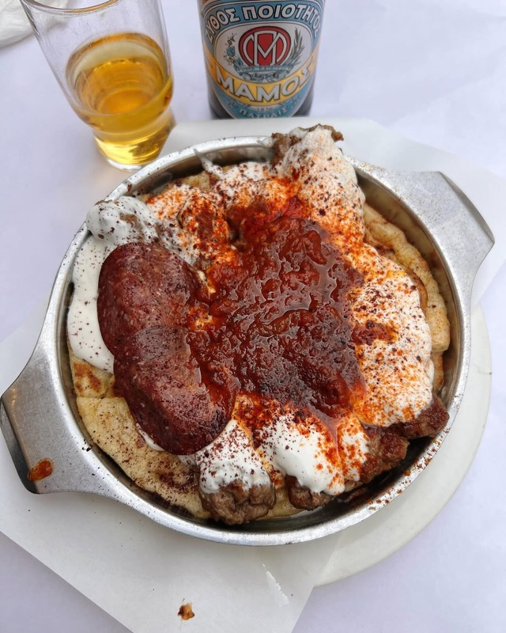
What to order: The merida kebab — a massive plate of grilled kebab with pita, onions, tomatoes, and optional yogurt on the side. Skip the gyros, come for the kebab.
tabiji verdict: The controversial pick. Right on Monastiraki Square — yes, tourist central. Reddit is split: some call it a trap, others call it the best kebab in Athens. The truth? The merida kebab is legitimately great and has been since 1964. Just go with realistic expectations.
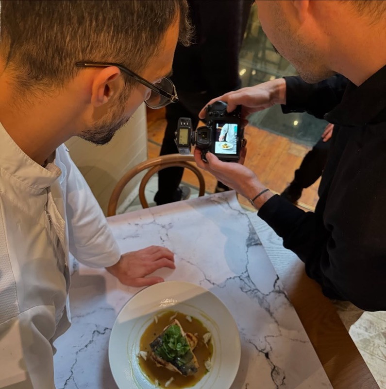
What to order: Rooftop table with Acropolis view if you can get one. Their updated moussaka, risotto with Greek saffron, and creative mezedes are all standouts. Excellent cocktails too.
tabiji verdict: Modern Greek cuisine with one of the best Acropolis views in the city. Yes, it's on touristy Adrianou Street, but the food is chef-driven and genuinely creative. The rooftop terrace at sunset is unforgettable. Reserve ahead.
What to order: Classic taverna fare — grilled meats, stewed dishes, horta (wild greens), and thick-cut fried potatoes. The daily specials board is your best friend.
tabiji verdict: Deep in residential Pangrati — you will be the only tourist. That's the point. Vyrinis is where Greek families go for Sunday lunch. The prices reflect the neighborhood, not the tourist markup. Combine with a stroll around the Pangrati plateia.
What to order: Giantes plaki (giant baked beans — their namesake dish), grilled meats, and seasonal vegetable plates. Simple taverna classics done well. Barrel wine is the move.
"Giantes in Exarcheia, Rozalia also in Exarcheia... You'll find better restaurants generally in Psyrri, Exarcheia, Thisseio, and some in Pangrati than you will in Monastiraki/Plaka."
— r/GreeceTravel · Amazing restaurants thread
tabiji verdict: Named after the giant beans that are a Greek taverna staple. Another Exarchia gem with a laid-back neighborhood vibe. The outdoor seating on the square is perfect for people-watching in Athens' most countercultural district.
What to order: Rotisserie chicken — slow-roasted and perfectly seasoned. The pork belly is also incredible. Side of roasted potatoes and a simple salad. That's the play.
"Spitjack — Rotisserie chickens, slow roasted pork belly. OMG this place is a MUST visit every time I go to Athens."
— r/GreeceTravel · Athens food recommendations
tabiji verdict: Not a traditional taverna — more of a modern rotisserie joint. But when a place inspires this kind of devotion from repeat visitors, it earns its spot. The rotisserie chicken is simple perfection. Great for a quick, satisfying meal between sightseeing.
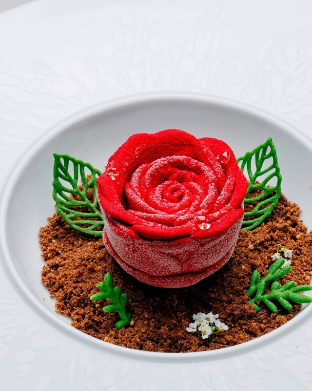
What to order: The tasting menu for the full experience, or à la carte: grilled fresh catch, octopus carpaccio, and any of Chef Lazarou's creative seafood preparations. Guaranteed fresh fish daily.
"Varoulko. Michelin starred chef, very good food, guaranteed fresh fish. It is a bit pricey, but probably the best game in town."
— r/GreeceTravel · Best Fish Restaurant in Athens
tabiji verdict: The splurge pick. Chef Lefteris Lazarou holds a Michelin star and is considered Greece's greatest seafood chef. Waterfront setting in Piraeus, impeccable fish, and a bill that's still modest by Michelin standards. For a special evening, this is the one.
Frequently Asked Questions
What is the best taverna in Athens?
Based on Reddit consensus, To Steki tou Ilia in Thissio is the most recommended for its legendary lamb chops. For home-style cooking, Taverna Oikonomou in Ano Petralona and Mavro Provato in Pangrati are consistently praised. It depends on what you're after — meat, seafood, mezedes, or the full traditional experience.
Are tavernas in Athens tourist traps?
Some are — especially in Plaka and along the main Monastiraki drag. Reddit consistently advises avoiding restaurants with picture menus and staff hawking outside. Head to neighborhoods like Psyrri, Exarchia, Pangrati, Petralona, and Koukaki where locals actually eat. Every taverna on this list is vetted by residents.
How much does a meal at an Athens taverna cost?
A typical taverna meal costs €10–€20 per person including a main dish, salad, and bread. Wine by the carafe is usually €5–€8. A generous dinner for two with wine, appetizers, and mains typically runs €30–€50. Budget spots like Diporto can be under €10 per person.
What should I order at a Greek taverna?
Start with a Greek salad (horiatiki) and tzatziki. Share a few mezedes: saganaki (fried cheese), grilled octopus, fava (split pea puree), and dolmadakia (stuffed vine leaves). For mains, try lamb chops, moussaka, gemista (stuffed peppers), or fresh grilled fish priced by the kilo. Finish with complimentary fruit or halva.
Do Athens tavernas have English menus?
Most tavernas in central Athens have English menus or bilingual staff. Some traditional spots like Diporto have no menu at all — you eat what they cooked that day. In neighborhood tavernas, pointing and smiling goes a long way. Google Translate's camera mode works great for Greek menus.
When is the best time to eat at a taverna in Athens?
Greeks eat late. Lunch is 1:30–3:00 PM and dinner starts at 9:00 PM, peaking around 10:00 PM. Arriving at 7:00 PM means you'll have the place to yourself. Weekend lunches are popular for long, leisurely meals. Many traditional tavernas close on Sundays or Mondays — always check ahead.